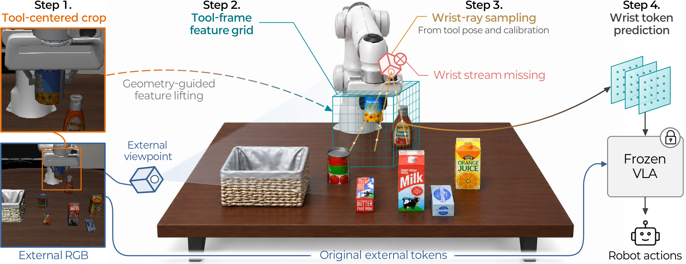
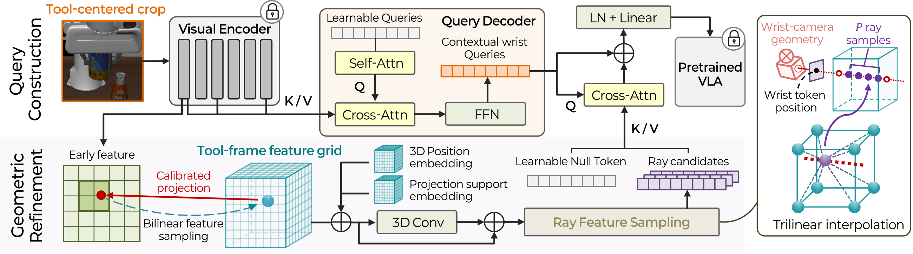

Tool-centered crop
Forward kinematics and camera calibration locate the physical tool origin in the external image.
† Equal contribution
Complete the missing wrist view in feature space.
The idea
RayWrist is a learned adapter for wrist views that may be unavailable at deployment. Robot-camera geometry selects a local crop from the retained external RGB image and organizes its features in a tool-frame grid.
A ray-based readout completes the policy’s native wrist features. During missing-view adaptation, only the adapters are trained; the visual encoder and recipient policy remain frozen.
RayWrist in action
Choose a benchmark, then a task.
Watch the observation and the reader’s tool-frame attention together.
Qualitative rollout visualizations. The evaluation results below use the fixed task sets and trial counts reported in the paper.
RoboCasa · head-only joint learning
Two local readers follow the two tools through longer manipulation sequences. Head-camera RGB supplies the evidence; virtual wrist frames organize the readout.
The method
Geometry exposes local evidence.
A learned adapter completes the missing features.

Forward kinematics and camera calibration locate the physical tool origin in the external image.
Early crop features are lifted into a local 3D feature grid and mixed with residual 3D convolutions.
Each contextual wrist query reads spatial candidates along its calibrated ray and a learned null token.
Learned writers fill the original wrist-feature slots. Retained views follow their native policy paths.

On RoboCasa, fixed virtual wrist frames and head-camera intrinsics define the query rays. Two independent readers and the native action fine-tuning scope are optimized together from the first update; vision and language stay frozen.
Inside the readout
Follow a wrist-token position into the external crop and the local 3D grid. Inspect how its attention is shared between spatial candidates and null.
Choose any token with the slider or the reference wrist image. Drag the 3D view to rotate it; switch wrists for the bimanual scenes.
Read a ray, keep the null. Marker area follows absolute candidate probability; color runs from blue (0) to gold (0.25 and above). The gray bar is the original null probability.
These animations sweep token positions within fixed observations; the rollout videos above show task execution. They reuse saved reader diagnostics on recorded trajectory observations. Reference wrist RGB locates LIBERO and RoboTwin tokens; RoboCasa shows the virtual query lattice, with no wrist-camera image.
Adaptation efficiency
Missing-view adaptation optimizes the wrist readers while preserving every recipient weight. The native visual and action interfaces stay in place.
Trainable parameters · one wrist
LIBERO single-wrist settings. The pretrained recipient remains loaded and frozen; only the adapter is optimized.
Peak training memory · π₀.₅
less peak memory
per GPU
Training profile: LIBERO π₀.₅, four RTX PRO 6000 GPUs, batch 64 per GPU. These are the actual paper recipes: FP32 FT and a BF16 frozen recipient with FP32 adapters, AdamW, and EMA. Full RayWrist includes conditioning alignment; update timing excludes setup and I/O.
Inference · batch one
Median observation-to-action-chunk latency on LIBERO Long, including crop encoding and completion.
No recipient updates during missing-view adaptation.
Complete wrist tokens at the existing policy interface.
Reuse the readers as views disappear; bypass them when views return.
Results
Success rates from the paper’s fixed evaluations.
Native fine-tuning is the comparison in each panel.
Only the wrist adapters are optimized.
Native visual and action interfaces are retained.
453 / 1,200 successful episodes across 24 tasks.
LIBERO values average Spatial, Object, Goal, and Long, with 50 episodes per task. RoboCasa uses the same base checkpoint and 30K-update budget for both methods. RoboCasa per-task results
50 episodes per task and method · success-rate bars share the 0–100% scale.
Download all task resultsReference
If RayWrist is useful for your research,
please cite our paper.
@misc{baek2026raywrist,
title = {RayWrist: Geometry-Guided Wrist-Token Completion
for Frozen Vision-Language-Action Models},
author = {Baek, Seunghun and Lee, Minjae and Kim, Won Hwa},
year = {2026},
archivePrefix = {arXiv},
eprint = {XXXX.XXXXX},
url = {https://arxiv.org/abs/XXXX.XXXXX}
}The arXiv identifier will be updated when the preprint is released.